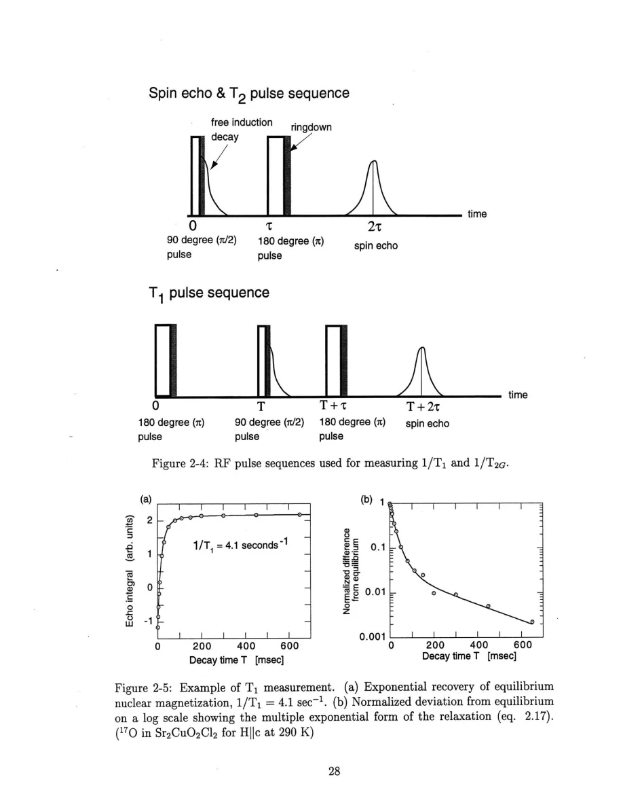
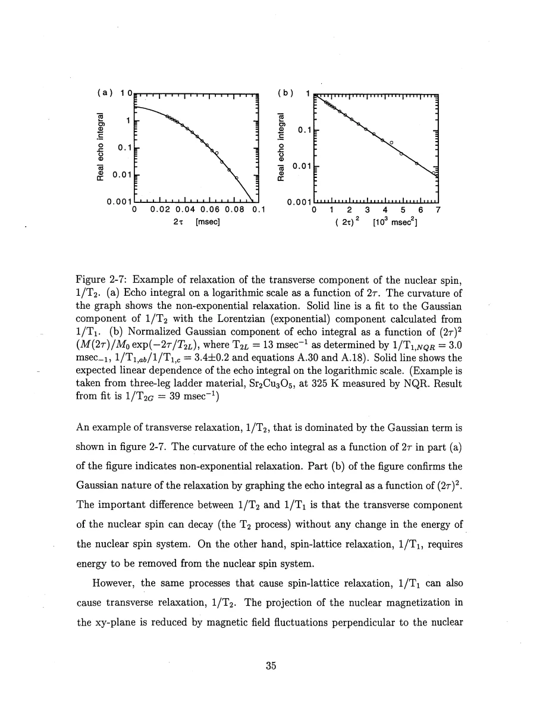
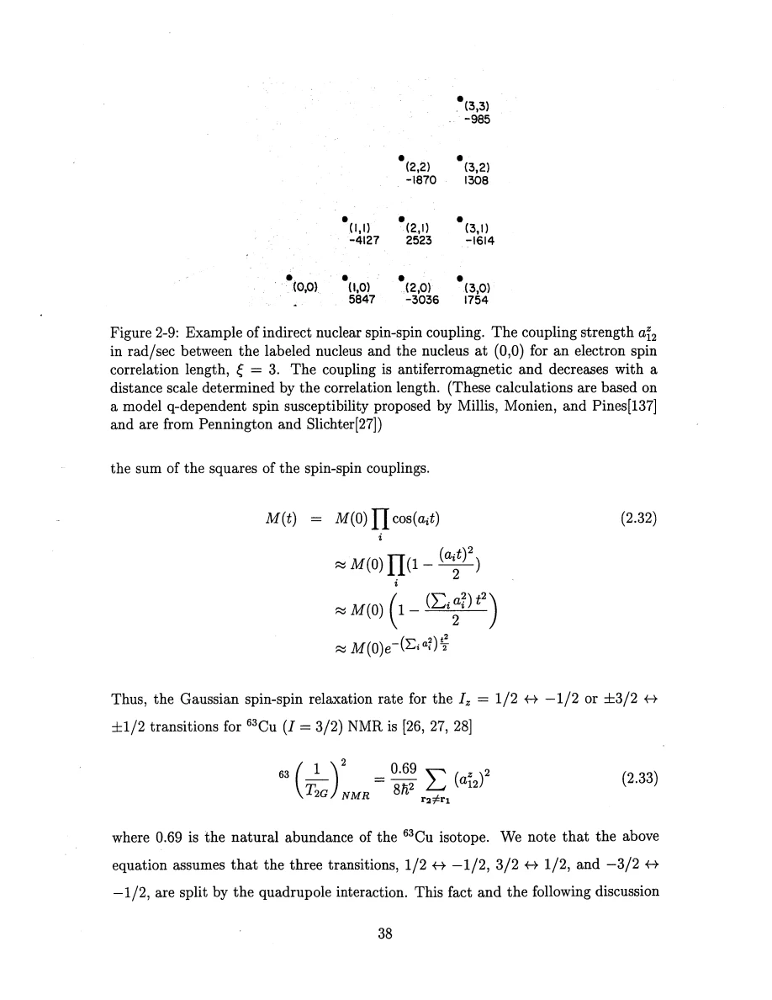

Thurber · supplied source 1999 · chapter unit
What the resonance, recovery and echo actually measure
Knight shift, quadrupole interaction, T₁ and T₂G have different response functions, filters and experimental controls.
The question: How can several nuclear measurements constrain different parts of one electronic spin system?
Before you start: the terms you need
- Spin-1/2 Heisenberg antiferromagnet: neighboring electron spins interact through J Sᵢ·Sⱼ with J>0.
- Hyperfine coupling: the electronic spin polarization produces a local magnetic field at a nucleus.
- Wave vector q: distinguishes uniform spin fluctuations near q=0 from staggered fluctuations near the antiferromagnetic vector Q.
- Correlation length ξ: a distance over which staggered electron-spin correlations remain appreciable.
- NMR/NQR: applied-field magnetic resonance versus resonance in the electric field gradient with no applied static field.
- Historical scope: these are experiments and interpretations reported in the supplied 1999 thesis, not a current review of quantum-spin transport.
See → explain → check
Follow the idea in 3 pictures.
Picture 1 / 3
Separate three response questions
Look for: Compare uniform polarization, slow fluctuations and indirect nuclear coupling.
Swipe across the picture to read every label, or enlarge it below.
- Knight shift K
- Spin-lattice 1/T₁
- Gaussian 1/T₂G
Teaching schematic. The quadrupole interaction separately probes the electric field gradient. Constants and tensor directions are omitted from these comparison boxes.
Similar temperature trends do not make these quantities identical.
Check the original: PDF p. 23 · PDF p. 27 · PDF p. 36 · PDF p. 40
Picture 2 / 3
Opposite spins cancel at midpoint oxygen
Look for: Compare equal couplings from two Cu sites in uniform and staggered modes.
Swipe across the picture to read every label, or enlarge it below.
- Cu
- Midpoint O
- +C and +C
- +C and −C
Teaching schematic. For a symmetric Cu–O–Cu bond, F_O(q)=2C cos(qa/2). Use Eq.5.7, not the inconsistent argument printed in early Eq.2.23.
The same electronic mode can be large at copper and filtered at oxygen.
Check the original: PDF p. 31 · PDF p. 32 · PDF p. 33 · PDF p. 34 · PDF p. 102
Picture 3 / 3
A Gaussian echo follows a second moment
Look for: Electronic susceptibility mediates many weak nuclear couplings; the pulse decides which spins participate.
Swipe across the picture to read every label, or enlarge it below.
- Electron correlations
- Indirect nuclear coupling
- Many like-spin pairs
- Gaussian echo
Teaching schematic. Indirect coupling aij is filtered by hyperfine factors and χ′. The Gaussian approximation describes the second moment of the decay, not a universal full-time law.
Pulse excitation is part of the interpretation of T₂G.
Check the original: PDF p. 36 · PDF p. 37 · PDF p. 38 · PDF p. 39 · PDF p. 40
Explain it back.
Try answering aloud before opening the explanation.
Is a curved semilog copper recovery enough to claim two electronic environments?
No. Selective excitation of a spin-3/2 transition has a known multiexponential recovery even with one T₁ parameter. Deviations must be judged against that baseline.
What can an RF pulse that excites only part of the line do to T₂G?
It can reduce the number of like spins flipped together and underestimate the Gaussian rate. Pulse-strength and bandwidth checks are essential.
Go deeper Follow the full argument
Shift and quadrupole splitting first locate the probe
An applied magnetic field produces nuclear Zeeman transitions, while the local field shifts their frequencies. After accounting for quadrupole corrections, the spin part of the Knight shift measures the response to a uniform applied field. The orbital and diamagnetic pieces are treated as nearly temperature independent on the thermal scales of these experiments. A K–χ plot with temperature as the implicit parameter can therefore calibrate the uniform hyperfine coupling. Quadrupole splitting measures the electric field gradient: copper has I=3/2 and oxygen-17 has I=5/2, so their level structures and recovery laws differ. For axial I=3/2 NQR the transition frequency is related simply to the principal quadrupole component; asymmetry modifies it. These frequency and symmetry measurements are also the basis for assigning overlapping signals to structural sites. A raw central-transition frequency must not be converted directly into a spin susceptibility without checking quadrupole shifts.
PDF p. 20 · PDF p. 21 · PDF p. 22 · PDF p. 23 · PDF p. 24 · PDF p. 25 · PDF p. 26
Recovery selects fluctuations and its multiexponential form has a known origin
T₁ measures the return of an excited nuclear population to equilibrium. Magnetic relaxation transfers energy through fluctuating local fields at the nuclear resonance frequency, specifically through components transverse to the quantization direction. The measured rate is a sum over electronic momenta weighted by squared hyperfine form factors. Copper usually sees strong staggered fluctuations; a midpoint oxygen can cancel them. The recovery of a selectively excited transition of I>1/2 is a weighted sum of exponentials even in a homogeneous sample. For the copper central transition the standard magnetic form contains 0.9 exp(−6t/T₁)+0.1 exp(−t/T₁). This should not be mistaken for two electronic populations. Copper isotope ratios provide another check: magnetic fluctuations scale with the squared gyromagnetic ratio and electric-gradient fluctuations with the squared quadrupole moment. The thesis finds magnetic relaxation generally dominant except in the explicitly discussed doped-ladder regime.
PDF p. 27 · PDF p. 28 · PDF p. 29 · PDF p. 30 · PDF p. 31 · PDF p. 32 · PDF p. 33 · PDF p. 34
The Gaussian echo is a coupling measurement with pulse requirements
An echo measured after a 90°–τ–180°–τ sequence separates refocusable broadening from relaxation that remains. Thurber fits exponential and Gaussian decay factors separately. The exponential component includes contributions from the same fluctuations that cause T₁ and can be constrained using relaxation anisotropy. The Gaussian component comes mainly from indirect nuclear coupling through correlated electron spins. Its second moment depends on which neighboring nuclei are flipped by the same RF pulse. Insufficient pulse bandwidth can reduce the apparent rate, so the experiments vary pulse strength and check saturation. Longer electronic correlations extend the indirect coupling network, but the quantitative connection to T₂G changes with dimension and form factor. The electronics chapter explains excitation, receiver protection, quadrature detection and phase cycling. Phase cycling removes pulse ringdown and unwanted echoes, allowing shorter delays; it does not eliminate real electronic relaxation. The early printed oxygen formula on page 33 should be read with the explicit half-bond argument on pages 74 and 102.
PDF p. 34 · PDF p. 35 · PDF p. 36 · PDF p. 37 · PDF p. 38 · PDF p. 39 · PDF p. 40 · PDF p. 41 · PDF p. 42 · PDF p. 43 · PDF p. 44 · PDF p. 74 · PDF p. 102
Translate the mathematics Essential equations and their meaning
m(t) = 0.9 e^(−6t/T₁) + 0.1 e^(−t/T₁)
Symbols: m: normalized deviation from equilibrium; t: recovery delay; T₁: copper central-transition magnetic parameter.
Selective I=3/2 central-transition excitation and magnetic relaxation. Known nuclear-level coefficients do not themselves indicate electronic heterogeneity.
R₆₅/R₆₃ ≈ 1.148 (magnetic); ≈ 0.860 (quadrupolar)
Symbols: R: isotope spin-lattice relaxation rate; 65 and 63 identify copper isotopes.
Limiting ratios use γ² or Q². Intermediate values suggest mixed channels only after the recovery and experimental conditions have been checked.
M(2τ)=M₀ e^(−2τ/T₂L) e^[−(2τ)²/(2T₂G²)]
Symbols: M: echo integral; τ: interpulse delay; T₂L and T₂G: exponential and Gaussian parameters.
The two components encode different processes and should be constrained separately.
Read the evidence Guided original source pages

PDF p. 28

PDF p. 35

PDF p. 38
What the evidence supports—and where it stops
- Magnetic-response equations require a magnetic relaxation channel. Quadrupolar relaxation in doped ladders is explicitly treated separately.
- The guide preserves final equations and experimental meaning; it does not reproduce every rate-matrix or electronics derivation.
Source version, reading coverage and preservation
Read all extracted substantive text on one-based PDF pages 14–204, including chapters 1–8 and appendices A–C; checked the title and abstract and visually inspected 66 full rendered pages for cited figures, formulas, tensor conventions and extraction ambiguities. PDF page numbers match the printed body page numbers.
Reviewed body pages: 14, 15, 16, 17, 18, 19, 20, 21, 22, 23, 24, 25, 26, 27, 28, 29, 30, 31, 32, 33, 34, 35, 36, 37, 38, 39, 40, 41, 42, 43, 44, 45, 46, 47, 48, 49, 50, 51, 52, 53, 54, 55, 56, 57, 58, 59, 60, 61, 62, 63, 64, 65, 66, 67, 68, 69, 70, 71, 72, 73, 74, 75, 76, 77, 78, 79, 80, 81, 82, 83, 84, 85, 86, 87, 88, 89, 90, 91, 92, 93, 94, 95, 96, 97, 98, 99, 100, 101, 102, 103, 104, 105, 106, 107, 108, 109, 110, 111, 112, 113, 114, 115, 116, 117, 118, 119, 120, 121, 122, 123, 124, 125, 126, 127, 128, 129, 130, 131, 132, 133, 134, 135, 136, 137, 138, 139, 140, 141, 142, 143, 144, 145, 146, 147, 148, 149, 150, 151, 152, 153, 154, 155, 156, 157, 158, 159, 160, 161, 162, 163, 164, 165, 166, 167, 168, 169, 170, 171, 172, 173, 174, 175, 176, 177, 178, 179, 180, 181, 182, 183, 184, 185, 186, 187, 188, 189, 190, 191, 192, 193, 194, 195, 196, 197, 198, 199, 200, 201, 202, 203, 204. Bibliography pages 205–212 were not independently verified against the cited external works. The guide explains final results and assumptions rather than reproducing every algebraic step, electronics part number or data point. Remaining rendered pages not listed in the private review were not claimed as visually read.
Source SHA-256: aca6c34f95675f0fb188d45f9148bacce2e832f0956949025eae42f1e1abf618. Original file bytes preserved locally, and in this room’s original download.
Thesis - Thurber - 1999 - O and Cu NMR spin dynamics in low dimensional antiferromagnets.pdf